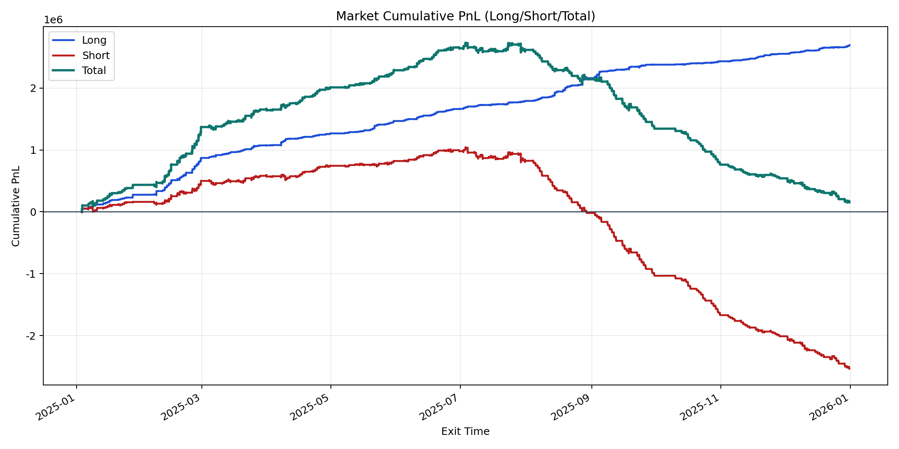
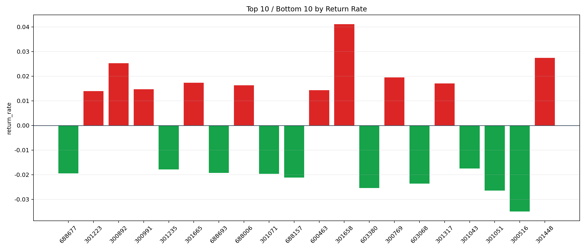

| repo_root | /home/haoranyou/data/output/alpha0.4_1w_5s_3ticks |
|---|---|
| period_months | 12 |
| period_label | 2025-01-03_to_2025-12-31 |
| start_time | 2025-01-03 09:50:12 |
| end_time | 2025-12-31 15:00:00 |
| n_trades | 1038261 |
| n_symbols | 3422 |
| total_pnl | 165156.86240000138 |
| long_total_pnl | 2694708.8227999993 |
| short_total_pnl | -2529551.9603999984 |
| total_entry_notional | 9746750415.0 |
| long_entry_notional | 1574469026.0 |
| short_entry_notional | 8172281389.0 |
| total_return_rate | 1.6944812924093057e-05 |
| long_return_rate | 0.00171150322953384 |
| short_return_rate | -0.00030952825043503875 |
| top_symbols_by_return | ["301658", "301448", "300892", "300769", "301665", "301317", "688006", "300991", "600463", "301223"] |
| bottom_symbols_by_return | ["300516", "301051", "603380", "603068", "688157", "301071", "688677", "688693", "301235", "301043"] |

